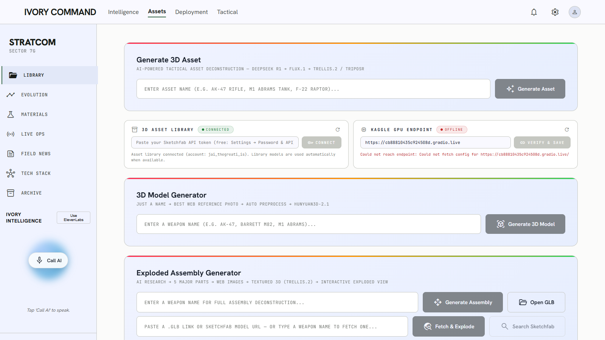
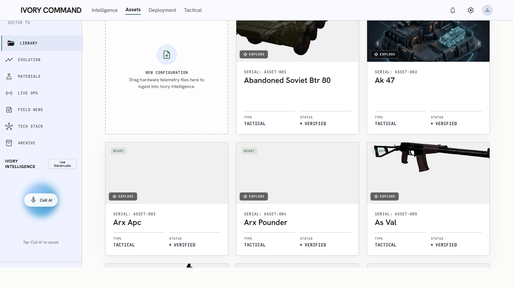
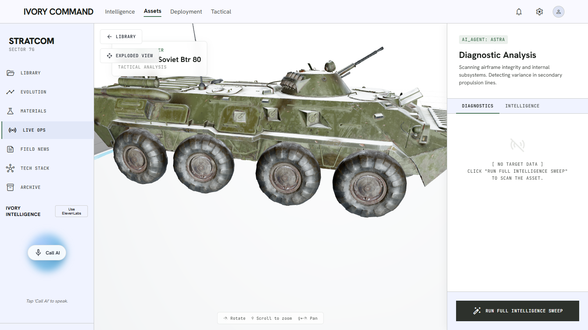
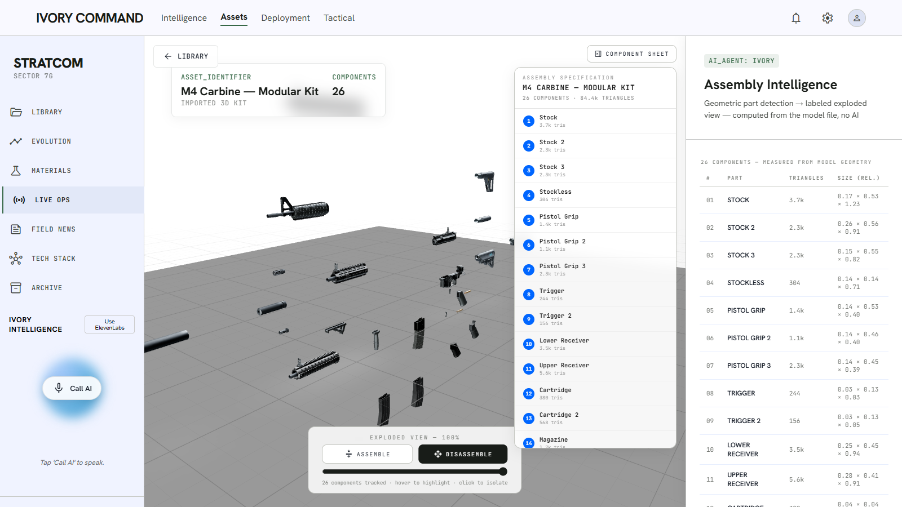
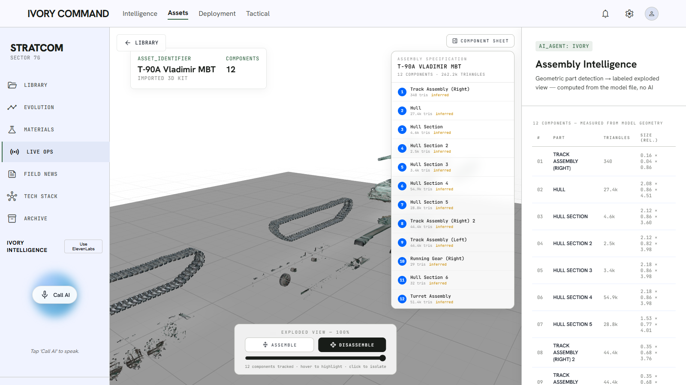
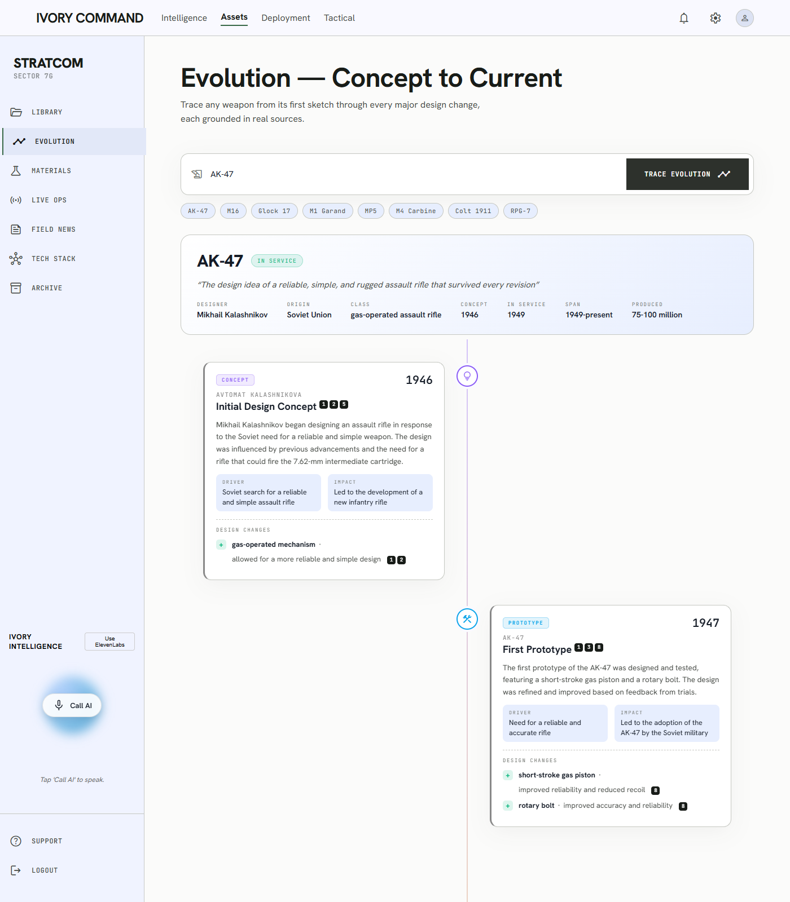
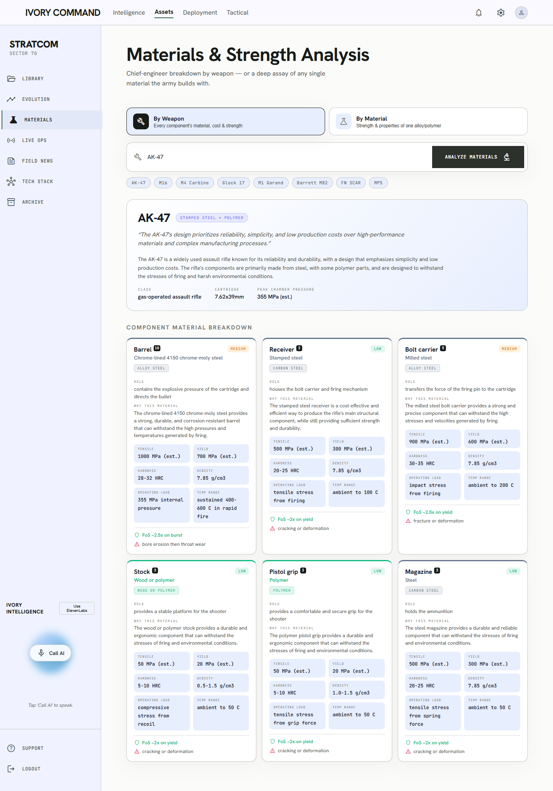
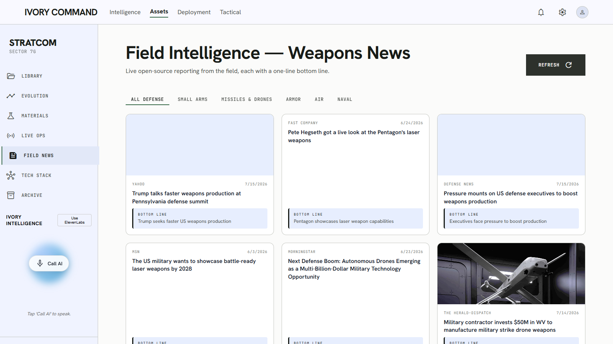
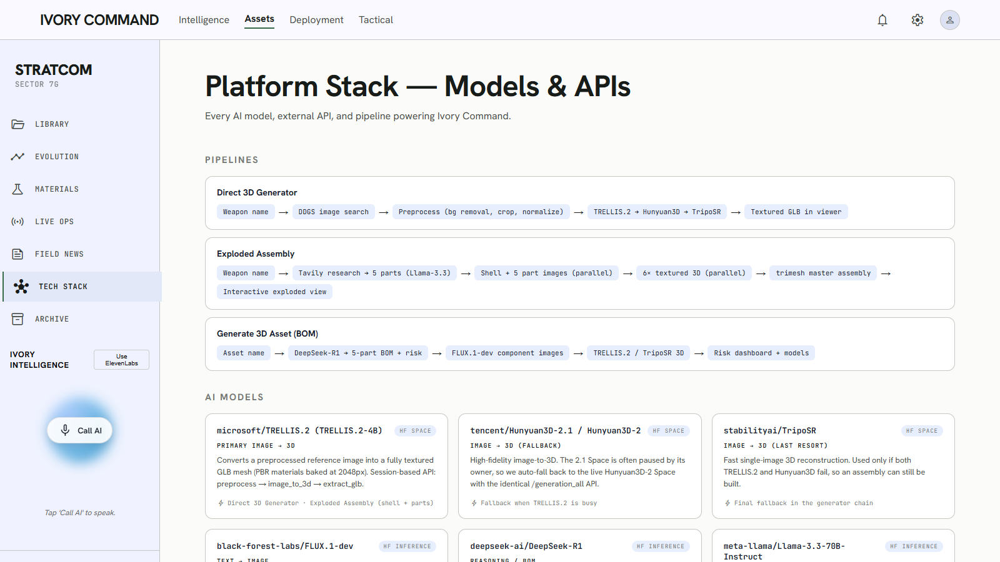
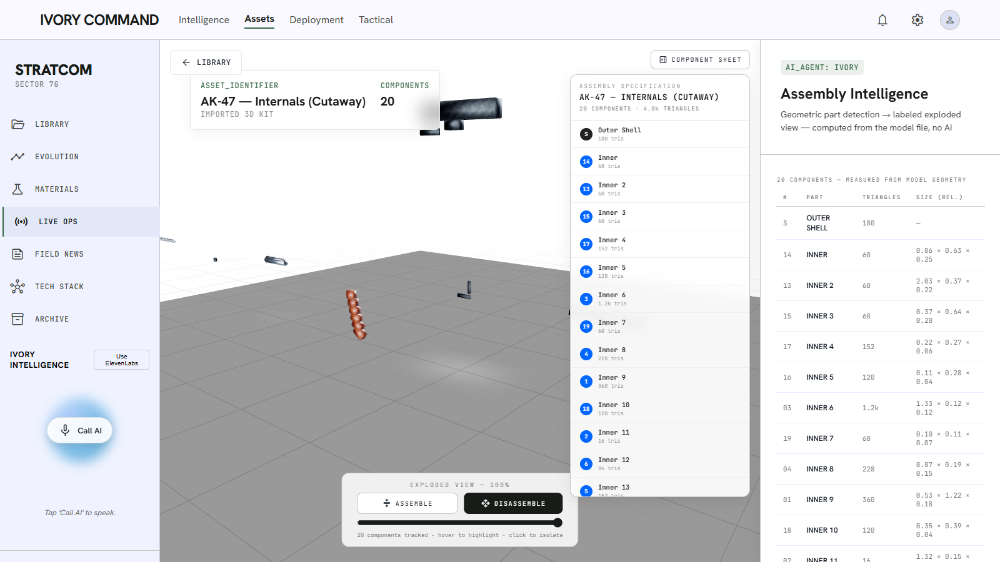

The complete story, science, and engineering of an AI-powered 3D weapons-intelligence platform — written so a 10th-grader can follow every page, and an engineer can rebuild the whole system from it.
Every chapter speaks two languages at once, so nobody gets left behind.
Blue boxes like this explain the idea with everyday examples — no jargon, no code. If you only read these boxes, you will still understand the entire application: what it does, why it exists, and how it works inside.
Purple boxes carry the precise technical detail — file names, algorithms, API contracts, trade-offs. Read these and you can maintain, extend, or re-implement the system, and answer any interview question about it.
Amber boxes like this one are "voice notes": short, conversational summaries written the way you would explain the chapter out loud to a friend. Read one before each chapter — or literally read it aloud — and you have the chapter's story in under a minute.
Screenshots are captured live from the running application. Flow diagrams show every pipeline step-by-step. Chapter 8 ("War Stories") is the honest engineering diary — every problem we hit and exactly how we solved it. Chapter 12 is a full interview preparation kit built from this project.
Imagine you could type the name of any weapon — "AK-47" — and thirty seconds later you're holding a 3D model of it on your screen, pulling it apart piece by piece, with every part labeled, its material explained, its history traced, and an AI you can literally talk to about it. That's Ivory Command. We built it because that experience did not exist anywhere — not in museums, not in textbooks, not in any app.
Understanding how a weapon system actually works — what parts it has, how they fit together, what they are made of, why the design evolved — today requires scattering your attention across armorer's manuals, museum visits, YouTube disassembly videos, Wikipedia, and materials-science textbooks. The knowledge exists, but it is fragmented, flat (2D), and slow to assemble.
Three groups feel this pain daily:
Think of a science museum where you can pick up any machine, pull it apart with your hands, and a guide explains each piece. Now imagine that museum has every weapon ever made, lives in your browser, and builds new exhibits on demand when you type a name. That is the product.
The product thesis: combine curated 3D assets (artist-made, CC-licensed), generative 3D AI (image-to-3D diffusion models) and LLM research pipelines (web-grounded, citation-backed) behind one React interface, with a deterministic geometry engine that can explode any GLB into labeled parts without calling an AI at all.
Ivory Command turns a weapon's name into an interactive, labeled, exploding 3D model with an AI research layer on top — in under a minute, mostly on free infrastructure.
Before touring the app, five ideas make everything else obvious: what a 3D model actually is, how a computer can "imagine" a 3D shape from one photo, what a large language model does, how a browser draws 3D, and how a server streams live progress. Each takes one minute. Master these five and the whole system reads like a story.
A 3D model is like papier-mâché: thousands of tiny triangles glued edge-to-edge form the shape (the mesh), and a printed picture (the texture) is wrapped around it like gift paper so it looks real. Our models are stored in a file format called GLB — a single file holding the shape, the wrapping pictures, and the list of named parts.
GLB = binary glTF 2.0: a JSON scene graph (nodes → meshes → primitives) plus binary buffers (positions, normals, UVs, indices) and embedded images. Materials follow PBR (physically based rendering): base-color, metallic-roughness, normal maps. Node names in the scene graph are how we later label parts. Our library assets range from ~340 to ~262,000 triangles; the AK-47 exploded kit carries 84.4k.
You can look at a photo of a rifle and imagine its back side, because you have seen thousands of rifles. Image-to-3D AI does the same: it studied millions of objects and their 3D shapes, so from one photo it can hallucinate the hidden sides in a sensible way, then sculpt a mesh to match. It is not measurement — it is educated imagination, which is why input photo quality matters so much.
We use Hunyuan3D-2.1 (Tencent): a flow-matching diffusion transformer generates a latent 3D shape conditioned on the image, decoded by marching cubes over an octree grid (we use octree resolution 256); a second paint pipeline renders the mesh from multiple views and diffuses PBR textures (albedo + metallic-roughness + normal) back onto the UV atlas. Fallback chain: TRELLIS.2 → Hunyuan3D-2 → TripoSR (fastest, weakest — untextured). Quality ceiling is set by the model, not by parameters — a lesson we learned the hard way (Chapter 8).
A large language model (LLM) is a very well-read assistant that can read web pages we hand it and write structured answers. We use it as a researcher (read sources → produce a weapon's history with citations), an engineer (break a weapon into its 5 major components), and an inspector (look at an image and judge "is this actually an AK-47 part?"). We never let it block the fast paths of the app.
Text reasoning: DeepSeek-R1 and Llama-3.3-70B-Instruct via Hugging Face Inference. Vision QC: Qwen2.5-VL-72B, Llama-4-Scout, gemma-3-27b (probed at runtime; all best-effort with heuristic fallbacks). Web grounding: Tavily search API feeds source snippets into prompts; answers must return strict JSON with numbered citation ids that map back to the source list. All research endpoints cache to disk so repeat queries are instant.
Your browser contains a tiny graphics engine (WebGL) that talks to the same graphics chip games use. A library called Three.js tells it what triangles to draw each frame — 60 times a second — which is how you can spin, zoom, and explode models smoothly with a mouse.
Frontend is React 18 + Vite, 3D via React Three Fiber (R3F)
— Three.js expressed as React components — plus @react-three/drei
helpers. GLBs load through GLTFLoader; annotations are HTML
portals projected into 3D space; the exploded viewer clones materials per
part for hover/isolate effects and animates world-space offsets converted to
parent-local coordinates (the Y-up gotcha, Chapter 8).
Generating a 3D assembly takes minutes, so the server sends a running commentary — "found the photo… checking it… building part 3…" — like a live sports ticker. The technology is called Server-Sent Events: a one-way news feed from server to browser over a single connection.
FastAPI endpoints return StreamingResponse with
text/event-stream; the React hooks
(useExplodedGeneration, useDirect3DGeneration)
consume phases (research → images → 3d → assembly → complete)
and per-step QC verdicts, rendering them as a live progress screen. Every
long pipeline is SSE-streamed; only short calls are plain JSON.
The app has three floors. The ground floor is the Library — thirty-one real, textured 3D weapons you can open and explode instantly. The first floor is Generation — type any name and the system fetches or builds a model for you. The top floor is Intelligence — history timelines, materials dossiers, live news, and a voice assistant. This chapter walks every room.

The left rail (STRATCOM) navigates the whole product: Library, Evolution, Materials, Live Ops (the 3D viewer), Field News, Tech Stack, and Archive. The Call AI button at the bottom launches the voice assistant. The two settings panels are worth pausing on — they are how non-technical users manage infrastructure:
gradio.live URL
printed by our Kaggle notebook and every 3D generation instantly reroutes to
your own free GPU. The panel live-probes the URL before saving and
shows CONNECTED / OFFLINE / NOT SET honestly.Both panels talk to runtime settings endpoints
(GET/POST /api/settings/kaggle-endpoint,
/api/settings/sketchfab-token). A POST validates against the live
service (Gradio config probe / Sketchfab /v3/me), applies via
os.environ immediately — no restart — and persists into
backend/.env. Bad URL → 422; dead endpoint → 502. The token is
never echoed back to the client.

Thirty-one curated assets spanning rifles, pistols, tanks, howitzers, a battleship, fighter jets, helicopters, UAVs and missiles. Each card opens the 3D viewer; the Explode button jumps straight to the exploded assembly view. Every asset was normalized to GLB with textures embedded, and CC-licensed models carry author + license credit rows.
The library began as a mixed bag of FBX / OBJ / .blend sources — only 9 of 30
folders even had a loadable glTF. We installed Blender 5.1 and wrote
scripts/convert_library_models.py +
blender_export_glb.py: batch-import each source inside headless
Blender, run find_missing_files, auto-relink textures (repairing
wrong-extension image references and name-matching loose texture files to
materials with longest-match scoring), then export GLB with transforms applied.
update_assets_data.py rescans folders and regenerates the frontend
catalog (assets_data.js).

Click any card and its model loads into a full 3D stage — rotate, zoom, pan. Press RUN FULL INTELLIGENCE SWEEP and the research pipeline fires: the AI researches the weapon on the live web, maps its findings onto the model's actual named parts, and returns floating annotations, a clickable parts list (camera flies to each part), and a Research tab with the full dossier.
POST /api/research runs a LangGraph three-node graph
(backend/app/graph.py): user_input normalizes the
request → research (Tavily deep search + LLM synthesis) →
mapping aligns researched components to the GLB's real mesh names
so annotations attach to actual geometry. Uploads go through
POST /api/upload-model (served back from /uploads/).
The camera fly-to is a spring animation in useCameraFocus.


Drag the slider or hit DISASSEMBLE and the weapon flies apart along its long axis into evenly spaced slots — like a CAD exploded drawing, with numbered balloon callouts, hover-to-highlight, and click-to-isolate. This entire experience — detection, naming, explosion — is 100% deterministic geometry code. No AI is called, so it is instant and it never fails. How it works is Chapter 6.
The paste box on the Assets screen accepts three kinds of input and produces the same result — an exploded, labeled model:
If a plain name finds nothing in the library, the UI offers the AI generation pipeline as an explicit fallback. A Search Sketchfab button also shows a browsable result strip with texture-quality chips so the user can pick manually.
The direct generator turns a bare weapon name into a textured 3D model with zero further input: it finds the best reference photo on the web, cleans it, sends it to the image-to-3D model on our Kaggle GPU, quality-checks the result, and loads it into the viewer. A progress screen shows the chosen source photo, the preprocessed cut-out, and each generation phase. Full pipeline in Chapter 5.
The most ambitious pipeline: type a name and the system researches the weapon's five major internal components, finds a real photo of each, generates a 3D mesh per part, anatomically arranges them inside the weapon's outer shell, and delivers an interactive exploded assembly — with a vision-model inspector checking every intermediate step. Full pipeline in Chapter 7.
The third generator card targets analysts: DeepSeek-R1 deconstructs an asset into a five-part Bill of Materials with per-component material dependencies and supply-chain risk scores, FLUX.1-dev draws clean orthographic component images, 3D models are generated per component, and a Risk Dashboard renders animated risk bars (STABLE / ELEVATED / CRITICAL) with an overall score counter.

GET /api/evolution?weapon= → Tavily research → Llama-3.3-70B
forced into a strict JSON schema (stages, changes, drivers, impacts, citation
ids) → disk cache (generated/evolution/) so presets return
instantly. The frontend renders framer-motion staggered nodes; DDGS-thumbnail
stage photos self-hide on hotlink failure rather than showing broken boxes.

Below the component grid (off-screen): a strength-of-materials comparison, the army's cost/selection trade-off matrix, and best-in-class material recommendations — all citation-backed. The By Material toggle flips to a deep single-material assay (e.g. "Ti-6Al-4V Titanium").


The Call AI orb opens a hands-free assistant: your speech is
transcribed in the browser (Web Speech API), sent to POST /api/chat
(LLM), and the answer is spoken back with speech synthesis. A toggle swaps in an
ElevenLabs Conversational AI widget for studio-grade voices.

Artist models only contain the parts you can see from outside. To show true internals — bolt carrier, gas piston, recoil spring, hammer, trigger — we wrote a parametric weapon factory: a hand-authored table of 19 real AK-47 parts (with dimensions in metres, materials and field-strip order) drives headless Blender through 20 geometry "archetype" builders (receiver, barrel, spring, banana magazine…), assigns PBR materials from our own procedurally generated seamless textures (FFT-based noise → phosphate steel, walnut, bakelite…), UV-unwraps, and exports a viewer-ready GLB where node names encode the disassembly order.
Picture a restaurant. The dining room is the React app in your browser — it presents everything beautifully. The kitchen is a Python FastAPI server on your machine — it does the cooking. And the specialty suppliers are outside services: Kaggle lends us a free GPU stove, Hugging Face lends AI chefs, Sketchfab is the premium ingredients market, and Tavily delivers fresh information. The kitchen always has a backup supplier for everything.
| Path | What it holds |
|---|---|
frontend/public/models/<id>/ | Library GLBs + license.txt, served statically |
backend/uploads/ | User uploads + direct-URL downloads (magic-byte checked, 400 MB cap) |
backend/uploads/kits/<uid>/ | Downloaded Sketchfab kits, cached by model UID — re-fetch is instant |
backend/generated/models/ | AI-generated GLBs and assemblies |
backend/generated/{evolution,materials,intel}/ | JSON research caches — every LLM answer is cached to disk |
backend/.env | Keys: HF_API_KEY, TAVILY_API_KEY, SKETCHFAB_API_TOKEN, KAGGLE_3D_ENDPOINT |
The one non-obvious architectural decision: heavy GPU work lives outside the app on disposable free infrastructure (Kaggle notebook → temporary gradio.live URL), and the app treats that endpoint as a hot-swappable, probe-verified setting. The product survives the endpoint dying mid-day — the panel shows OFFLINE and generation falls back to HF Spaces automatically.
You type "AK-47". The system googles it like a careful human: it skips the birthday-cake images and memes, picks a clean studio photo on a white background, cuts the weapon out, ships it to a free GPU we borrowed from Kaggle, and an AI sculptor builds the 3D shape. A quality inspector grades the result against our best artist-made models before you ever see it. Total time: about forty-three seconds.
image_finder.pyDDGS image search for "<name> real firearm". Two-pass ranking:
pass 1 scores metadata — resolution, aspect ratio, and title relevance
(name-token overlap + weapon keywords, minus junk keywords like
birthday, clipart, meme, cartoon, logo). Pass 2 downloads the top 6 and
pixel-verifies them: white border + darker center = a studio cut-out with
a subject actually present. Early-exits at combined score ≥ 0.75. Returns the
top 3 candidates, not just one.
pipeline_monitor.qc_imageA vision LLM confirms the photo shows the intended weapon, not a diagram, meme, or the wrong gun (it once rejected an AR-15 posing as an AK-47). Reject → try next candidate. All QC is best-effort: if the vision model is down, a heuristic approves and the pipeline never blocks.
Qwen2.5-VL-72Bfallback: heuristicimage_preprocess.pyBackground removal (optional locally — the GPU side re-does it), tight crop to subject, square padding, contrast/sharpen. Output: a clean white-background square image, the format image-to-3D models are trained on.
direct3d.generate_best_3dThe generator chain tries our Kaggle endpoint (Hunyuan3D-2.1 on dual
T4s, ~130 s full quality, same-contract Gradio API /generate_3d)
first, then HF Spaces: TRELLIS.2 → Hunyuan3D-2 → TripoSR. Every candidate GLB
is graded (step 5) and the chain early-stops the moment one clears the
quality bar — a good Kaggle result costs zero extra calls.
qc_qualityThe GLB is rendered from 4 views (our own numpy+PIL software renderer — no GPU needed) and graded against a rubric extracted from gold artist models per weapon class (firearm / aircraft / vehicle). Auto-fail conditions: cutaway look, untextured when texture is required, fewer than 1,500 faces, or score below the 0.62 bar. Geometric backstop runs even if vision is offline.
quality_rubric.jsonQUALITY_BAR=0.62Winner copied to generated/models/, streamed to the browser via
SSE with model_source labeling (e.g. kaggle-hunyuan3d),
and loaded straight into the 3D viewer.
Why so much machinery for "just download a photo"? Because the first naive version ranked images by resolution alone and proudly picked a high-res birthday-wishes greeting card as the AK-47 reference. Garbage photo in → garbage 3D out. The ranking, pixel check, and vision QC each exist because a specific failure taught us they must.
This is the pipeline we are proudest of, and it contains no AI at all. Give it any 3D file and it figures out — from pure geometry and file metadata — what the parts are, what to call them, and how to fly them apart like an engineering drawing. It's a chain of small, careful rules, each one earned by a real model that broke the previous rule. It runs in milliseconds and never has a bad day.
sketchfab_client.search_models_pooled fires all query-variant ×
sort-order jobs concurrently (ThreadPoolExecutor) with a 10-minute result
cache — pooled search returns in ~1 s. Tokenization splits letter/digit
boundaries so "AK47" ≡ "AK-47".
rank_candidates scores each result:
0.50 name-token overlap · 0.18 log-likes · 0.12 geometric
detail · 0.15 texture signal (texture count + max resolution from the
archive metadata) · small realism-keyword bonus — and multiplies by
×0.35 if the title matches a stylized-content pattern
(low poly, cartoon, voxel, toy…). Result: "AK-47" reliably picks a
4K-textured realistic model over a cute low-poly one.
acquire() tries the top 3 candidates in order (skipping dead
downloads), prefers native GLB else extracts a glTF zip, stores under
uploads/kits/<uid>/ keyed by model UID — refetching the same
model is instant. License + author metadata rides along for the credit badge
(CC attribution is a legal requirement, and the UI honors it).
The WAF story: Sketchfab's firewall blocks Python's
standard HTTP libraries (requests/httpx) by TLS
fingerprint — it returns an empty HTTP 202 no matter what headers you fake.
The stdlib urllib has a different TLS fingerprint and sails through.
Rule burned into the codebase: all Sketchfab HTTP goes through urllib.
A GLB's scene graph rarely matches its logical parts, so the viewer runs a multi-pass detector:
Sketchfab_model → root → …) to the first node that actually owns
geometry-bearing children.Result across the whole library: 31 assets, 5–28 parts each, zero failures —
verified by an automated headless regression
(frontend/scripts/verify_explode_parts.mjs).
The system names parts like a detective with three tools. First it reads the file's own labels, cleaning up messy artist names ("bcg" → "Bolt Carrier Group"). If the labels are junk (some files just say "Section 12" everywhere, or repeat the artist's watermark), it measures the shapes — the long thin tube at the front of a rifle is the barrel; the big box under a tank's turret is the hull. And it always tells you when it guessed, with an amber "inferred" tag.
Layered resolution in ExplodedAssemblyViewer.jsx:
(1) name recovery — glTF mesh names that GLTFLoader discards are
recovered via parser.json + associations;
(2) canonicalization — camelCase split, junk-word strip, glued-digit
split ("Wheel15"), pipeline-suffix strip, trailing-index strip;
(3) alias dictionaries — ordered regex → engineering-term maps per
weapon class (FIREARM / VEHICLE / AIRCRAFT / SHIP / MISSILE / ARTILLERY);
(4) meaninglessness tests — the watermark rule (same canonical
label on ≥3 parts and ≥60% of the model = artist watermark, ignore) and the
name-echo rule (label ≈ the asset's own name = useless);
(5) class router — weaponClassFromName (ordered regex,
firearm short-circuits first) else weaponClassFromShape
(e.g. missile = one dimension ≥4.5× the next and roundish);
(6) geometry classifiers per class over shared
partMetrics (axis position, height, signed laterality → "(Left)/(Right)",
volume, elongation, flatness) — with hard-won rules like one Main Gun
Barrel per tank and rotor-vs-wing span-ratio tests;
(7) duplicates numbered, inferred labels tagged amber. Groups are named after
their dominant descendant by world-bbox volume (vertex count famously
elected a coil spring once), with alias-term priority so a sling strap can't
outrank an Upper Receiver.
From the assembly's bounding box — X or Z, never Y (nothing explodes "upward along" a rifle).
Parts fly to evenly spaced slots in left-to-right order of their rest positions — no crossing paths. The outer shell lifts +Y first. Authored kits with natural spread use a radial layout instead; dense assemblies use grid slots; central parts get a normalized outward push so nothing stays hidden.
Per-part cubic easing, staggered with overlap so the disassembly reads like a film sequence, not a bomb. Balloon callouts with leader lines ride portals attached to the moving parts.
trimesh-exported GLBs carry a
Y-up root rotation — offsets computed in world space must be converted
to each part's parent-local space (quaternion + scale) or parts fly in
wrong directions. worldOffsetToParentLocal is the guard. The
standalone public/exploded.html viewer keeps the same math in
vanilla Three.js.
Why "no AI" is a feature, not a limitation: an earlier version enriched every fetched model with a 90-second LLM research call — it often timed out and blocked the viewer. The rewrite made everything deterministic: labels from file metadata + geometry, spec sheet measured from triangles, realism from ranking signals. Instant, free, and reliable. The AI assembly generator remains available as a separate, opt-in pipeline.
This pipeline attempts something genuinely hard: build an exploded view of a weapon's insides from nothing but its name. An AI engineer lists the five major components. For each one we find a real photo, check it, sculpt it into 3D, check it again, and then — the hardest part — place all five parts anatomically inside the outer shell, so the magazine sits under the receiver and the bolt sits in the middle, before the whole thing explodes apart. A vision model watches every step like a site inspector.
exploded.pyThe LLM returns the weapon's 5 major components with placement
metadata: axis position (front/center/rear), vertical position,
length-fraction of the shell, and orientation. A keyword fallback table
(barrel → front-top, magazine → bottom-vertical, stock → rear…)
validates every answer.
For the shell and each part: find 3 photo candidates → vision QC (reject → next candidate) → preprocess → 3D generation → mesh QC (≥1,500 faces, aspect ratio < 30; reject → next). Sequential because one Kaggle GPU makes parallelism fake — an earlier semaphore-3 version just overwhelmed the free Space and everything failed. Every verdict streams to the UI live.
assembly_builder.pyThe builder slices the shell into 48 bins along its long axis,
measuring the real silhouette (min/max height, half-thickness per bin). Each
part is rotated by 90° permutations to its intended orientation, scaled to
its researched length-fraction, and anchored inside the tightest silhouette
window over its span (margin 0.86) — because a rifle's bounding box is
mostly air under the barrel, and bbox containment once left parts poking out
of the gun's outline. A relax pass pushes same-band parts apart. Exports one
hierarchical GLB: Outer_Shell + Inner_Part_1..5
(slot = field-strip order).
qc_assembly renders 4 views and asks the vision model: "single
coherent weapon, nothing sticking out?" On a protrusion flag the assembly
rebuilds once at 0.78 scale. Then the exploded viewer takes over with
its strict field-strip mode.
Early versions fed the LLM raw part coordinates; it ignored the numbers and
recited a textbook parts list (calling the front-most part a "dust cover").
The fix that worked: translate geometry into English cues —
"FRONT-MOST, on the TOPLINE, long and thin", "*** LARGEST VOLUME ***",
"MIRRORED PAIR with part_7" — and force a required geometry_cue
field so the model must cite its evidence. Identification went from
textbook-recital to 388/388 parts across the library, with honest
medium/low confidence flags on the 11 models whose mesh names are pure junk.
Every engineering project has a polished demo and a scarred logbook. This is the logbook. Ten real battles: a free-GPU quota wall, a two-week fight with numpy on Kaggle, a firewall that fingerprints your TLS handshake, an AI that picked a birthday card as a rifle photo, and more. Each entry: what broke, why it broke, and the exact fix. This chapter is where the deepest learning lives.
gradio.live URL; the app takes that URL as a hot-swappable setting, probes it before saving, and keeps HF Spaces as automatic fallback. Result: ~43 s per model, no quota.numpy.dtype size changed (Expected 96, got 88), then cannot import name '_center', then No module named 'rembg'.--force-reinstall) creates a mixed install; (b) pip installs survive kernel restarts on Kaggle, so a polluted disk poisoned every retry; (c) the rembg dependency chain (→ pymatting → numba → scipy) was the thing dragging scipy around in the first place.kaggle/ONE_CELL_paste_into_kaggle.py: never touch numpy (freeze base versions via a pip constraints file); always start from a brand-new notebook, not a restarted one; never install rembg — inject a stub module into sys.modules (the pipeline keys backgrounds out in pure PIL, so the stub is functionally complete). Verified end-to-end on the tenth iteration./generate_3d signature through all three model swaps, so the backend never changed.urllib presents a different TLS fingerprint and passes. Project rule: all Sketchfab HTTP uses urllib, forever.worldOffsetToParentLocal() — convert each offset through the parent's inverse world quaternion and scale before applying. The math was then verified headlessly in Node against real assemblies (even spacing, shell clearance, both axis branches) so regressions are caught by script, not by eyeballs.geometry_cue field citing the evidence. 388/388 parts identified across the library..env, the backend "restart" silently served stale settings.reload=True spawns a worker whose process name is multiprocessing.spawn — killing by script name left an orphan worker holding port 8000 and serving the old environment.Get-NetTCPConnection -LocalPort 8000) or run production-style without reload. Better: the settings API (Chapter 3.1) applies env changes live, so most restarts became unnecessary.ddgs (and it returns image sizes as strings).
gradio_client 2.x renamed hf_token= → token=; compat shims in all three 3D clients.
Python 3.14 has no rembg wheel — background removal is gracefully optional locally.
Vite 6 binds ::1 — health-check localhost, not 127.0.0.1.
np.convolve is O(N·k) — a 0.6 s audio-ducking kernel over 19M samples hung for hours during the promo-film render; replaced with a cumsum box filter.
Background dev servers die with the session — long batch jobs are run in resumable, idempotent foreground chunks.Nine AI models, four external APIs, two GPU sources, and a handful of open-source libraries — all on free tiers. This chapter is the complete shopping list with each item's exact job.
| Model | Kind | Job in this app |
|---|---|---|
| Hunyuan3D-2.1 (Tencent) | Image → 3D, self-hosted on Kaggle 2×T4 | Primary 3D generator: 3.3B shape model + 2B PBR paint model (albedo, metallic-roughness, normal) |
| TRELLIS.2-4B (Microsoft) | Image → 3D, HF Space | Textured fallback generator |
| Hunyuan3D-2 (Tencent) | Image → 3D, HF Space | Second fallback (2.1's public Space is often paused) |
| TripoSR (Stability AI) | Image → 3D, HF Space | Last-resort fallback — fast but untextured |
| DeepSeek-R1 | Reasoning LLM, HF Inference | BOM deconstruction with supply-chain risk scoring |
| Llama-3.3-70B-Instruct | LLM, HF Inference | Component research, evolution timelines, materials dossiers, part-intel mapping — strict-JSON outputs with citations |
| Qwen2.5-VL-72B / Llama-4-Scout / gemma-3-27b | Vision LLMs, HF Inference | Pipeline inspection: photo identity QC, assembly protrusion QC, quality grading (probed at runtime, heuristic fallback) |
| FLUX.1-dev (Black Forest Labs) | Text → Image, HF Inference | Orthographic component images for the BOM pipeline |
| Service | Job | Cost |
|---|---|---|
| Kaggle | Free 2×T4 GPU sessions hosting our Hunyuan3D-2.1 endpoint via gradio.live share URLs (~12 h lifetime) | Free |
| Hugging Face | Spaces (3D fallbacks) + serverless Inference (all LLMs/vision) under one HF_API_KEY | Free tier |
| Sketchfab API | CC-licensed model search + download (public search unauthenticated; downloads need a free token) | Free |
| Tavily | Web research grounding for every citation-backed feature | Free tier |
| DDGS (DuckDuckGo) | Reference-photo and news search — no key needed | Free |
| ElevenLabs (optional) | Studio-grade conversational voice widget | Optional |
| Library | Side | Job |
|---|---|---|
| React 18 + Vite | Frontend | UI framework + dev server/bundler |
| Three.js + React Three Fiber + drei | Frontend | All 3D rendering, loaders, controls, portals |
| framer-motion | Frontend | UI animation (timelines, cards, counters) |
| Puppeteer | Frontend tooling | Headless E2E verification + screenshots — the 3D features are regression-tested by scripts that read the rendered UI back |
| FastAPI + uvicorn | Backend | API server, SSE streaming, static file serving |
| LangGraph | Backend | The research pipeline graph (input → research → mapping) |
| trimesh | Backend | Mesh loading, normalization, assembly building, GLB export |
| numpy + PIL | Backend | Image scoring/preprocessing + our zero-dependency software GLB renderer (previews & QC views without a GPU) |
| gradio_client | Backend | Typed client for the Kaggle endpoint and HF Spaces |
| Blender 5.1 (headless) | Tooling | Library format conversion + the procedural internals factory |
| edge-tts / ffmpeg | Tooling | Promo film: narration synthesis + assembly/mux |
Weapons.ai/
├─ frontend/ React app (localhost:5173)
│ ├─ src/App.jsx Shell: views, routing, deep links (?glb=…), paste box
│ ├─ src/assets_data.js Generated library catalog (31 assets)
│ ├─ src/components/ 30 components — viewers, pages, panels, progress UIs
│ │ ├─ ExplodedAssemblyViewer.jsx ★ the deterministic explode engine
│ │ ├─ Canvas3D / ModelViewer / Annotation the research viewer
│ │ ├─ EvolutionPage / MaterialsPage / NewsPage / TechStackPage
│ │ ├─ RiskDashboard / BOMTable / DetectedPartsTable
│ │ ├─ GpuEndpointPanel / AssetLibraryPanel / SketchfabSearchResults
│ │ └─ VoiceAgent.jsx speech in/out + /api/chat
│ ├─ src/hooks/ SSE consumers + camera focus
│ ├─ public/models/<id>/ Library GLBs + license.txt
│ ├─ public/exploded.html Standalone vanilla-Three viewer (same math)
│ └─ scripts/ 20 Puppeteer verify/screenshot/E2E tools
├─ backend/ FastAPI app (localhost:8000)
│ ├─ app/main.py All endpoints (research, generators, settings, news…)
│ ├─ app/graph.py LangGraph research pipeline
│ ├─ app/nodes/ direct3d · exploded · research · mapping · pipeline
│ ├─ app/tools/ 16 modules: sketchfab_client ★ kaggle_client ★
│ │ image_finder · image_preprocess · assembly_builder ★
│ │ pipeline_monitor ★ engineering_intel · llm · search
│ │ hunyuan3d/trellis/triposr clients · evolution
│ │ materials · material_profile · flux_client
│ ├─ generated/ Models + JSON research caches
│ └─ uploads/ User uploads + Sketchfab kit cache
├─ kaggle/
│ └─ ONE_CELL_paste_into_kaggle.py ★ v10: the entire GPU server in one cell
├─ scripts/ Blender automation: convert_library_models,
│ │ blender_build_weapon (internals factory),
│ │ gen_pbr_textures (FFT seamless textures),
│ │ build_library_intel, render_glb_preview
│ └─ quality/extract_rubric.py Gold-model rubric extraction
├─ video/ Promo-film pipeline (assemble.py, finish.py)
└─ docs/handbook/ ← you are hereFiles marked ★ are the five that a new engineer should read first — together they contain every load-bearing idea in the system.
| Endpoint | What it does |
|---|---|
GET /api/health | Liveness check |
POST /api/research | LangGraph sweep: Tavily research + LLM → part-mapped annotations |
POST /api/upload-model | Ingest a user GLB → served from /uploads/ |
POST /api/open-model | The paste box: direct .glb URL | Sketchfab page URL | weapon name → downloaded model (409/404/422/502 error contract) |
GET /api/sketchfab-search?q= | Browsable ranked results with texture chips |
POST /api/asset-intel | Opt-in deep part research for a library asset (cached per slug) |
POST /api/generate-3d-direct + GET …/stream/{name} | Pipeline I with SSE progress |
GET /api/generate-exploded/stream/{name} | Pipeline III with SSE progress + QC verdict stream |
POST /api/generate-asset + GET …/stream/{name} | BOM pipeline (DeepSeek-R1 → FLUX → 3D) with SSE |
POST /api/chat | Voice/text assistant backend |
GET /api/news?q= | Live defense news with one-line bottom lines |
GET /api/evolution?weapon= | Citation-backed design-history timeline (cached) |
GET /api/materials?weapon= · GET /api/material-analysis?material= | Materials dossier / single-material assay (cached) |
GET/POST /api/settings/kaggle-endpoint | Probe + hot-apply + persist the GPU URL |
GET/POST /api/settings/sketchfab-token | Validate + persist the library token (never echoed) |
POST /api/save-image/{model} | Store viewer snapshots |
These are the questions a real interviewer would ask about this project — system design, AI engineering, debugging depth, and product judgment — with the answers this handbook has already earned you. Practice saying each answer out loud in under a minute.
Ivory Command is a 3D weapons-intelligence platform: type any weapon's name and it delivers an interactive, labeled, exploding 3D model in under a minute. It layers three acquisition strategies — a curated CC-licensed library, automatic Sketchfab fetch with realism ranking, and generative image-to-3D on a self-hosted free Kaggle GPU — under one deterministic geometry engine that detects, names, and explodes parts without any AI call. On top sits an LLM research layer: citation-backed design-evolution timelines, materials dossiers, live news, and a voice assistant. React/Three.js frontend, FastAPI backend, all free infrastructure.
Because they trade off quality, coverage and cost differently. Artist-made models (library, Sketchfab) beat any 2026 image-to-3D model on quality — so they're always preferred. But they only exist for popular weapons. Generation covers the long tail at lower fidelity. The router is quality-first with graceful degradation: library → ranked Sketchfab fetch → AI generation, each an automatic fallback of the previous, with the user explicitly told which source they got.
The backend runs a pooled concurrent Sketchfab search (~1 s, cached), ranks candidates with a realism-aware score — 0.50 name-token overlap, 0.18 log-likes, 0.12 detail, 0.15 texture signal, ×0.35 stylized penalty — downloads the best GLB into a UID-keyed cache, and returns it with license metadata. The frontend loads it into the exploded viewer, which detects parts (wrapper descent, connected-component splitting, clustering), names them (alias dictionaries → junk filters → per-class geometry classifiers), and animates a CAD-style explosion. No AI anywhere, typically 5–20 seconds end-to-end.
It's a layered deterministic resolver. First trust the file: recover glTF mesh names the loader discards, canonicalize them, and map through ordered regex alias dictionaries per weapon class ("bcg" → Bolt Carrier Group). Then distrust the file: a watermark rule (same label on ≥3 parts and ≥60% of the model) and a name-echo rule mark junk. For junk, measure: a class router picks firearm/tank/aircraft/etc. from the name or shape, and a per-class geometry classifier names parts from normalized metrics — axis position, elongation, flatness, mirrored pairs. Guessed labels are displayed with an "inferred" tag. The whole thing runs in milliseconds and is regression-tested headlessly across all 31 library assets.
The Kaggle numpy ABI saga. Symptom: numpy.dtype size changed, Expected 96 got 88. Root cause chain: rembg's dependency tree pinned a numpy-2-ABI scipy while we pinned numpy 1.26 → mixed ABI; then we discovered pip installs survive Kaggle kernel restarts, so pollution persisted invisibly; then our own "self-heal" numpy reinstall corrupted a second run. The durable fix was philosophical: never touch numpy — freeze base-image versions via a constraints file, install only pure-Python extras, start from genuinely fresh notebooks, and stub rembg out of existence in sys.modules since our pipeline pre-keys backgrounds anyway. Ten iterations of one cell, and every rule is documented inline in it.
A verifier-guided loop with an explicit bar. We extracted a grading rubric from gold artist-made models per weapon class. Every generator candidate is rendered from four views by our software renderer and graded — auto-fail for cutaway look, missing textures, or under 1,500 faces; otherwise scored against the rubric with a 0.62 bar. The generator chain grades every candidate, keeps the best, and early-stops the moment one clears the bar. Vision grading is best-effort with a geometric backstop, so an offline vision model degrades the check, never blocks the pipeline.
Product judgment from data: the AI enrichment took up to 90 seconds, often timed out, and blocked the core interaction. Users open an exploded view to explore — instant response matters more than richer labels. Deterministic geometry gives correct-enough labels in milliseconds with zero cost and zero failure modes; AI research remains available as an explicit opt-in. The lesson I'd generalize: use AI where it's uniquely capable, not where an algorithm is faster and more reliable.
Detect the assembly's longitudinal axis from its bounding box (X or Z, never Y). Sort parts by rest position along that axis and assign evenly spaced slot targets so paths never cross; lift the outer shell vertically first; run a staggered per-part cubic-eased cascade. Kits with authored spread use radial layout; dense assemblies use grid slots. The subtle part is coordinate spaces: GLBs often carry a Y-up root rotation, so world-space offsets must be converted to each part's parent-local frame via the inverse world quaternion — otherwise parts fly diagonally. We verify the math headlessly in Node against real assemblies.
Sketchfab's WAF blocked every Python request with an empty HTTP 202 regardless of headers — it fingerprints the TLS handshake (JA3), not the HTTP layer. requests and httpx share a known fingerprint; stdlib urllib presents a different one and passes. Diagnosis required isolating variables down to the HTTP client itself. The fix is one line; knowing why is the engineering.
Server-Sent Events end-to-end. Every generator streams named phases and per-step inspector verdicts ("photo rejected: shows AR-15, not AK-47 — trying candidate 2") to dedicated progress screens, so a two-minute pipeline feels like watching work happen rather than staring at a spinner. Short operations stay plain JSON. Errors arrive as typed SSE events with the failing phase attached.
Every external dependency has a layered fallback: 3D generation — Kaggle endpoint → TRELLIS.2 → Hunyuan3D-2 → TripoSR; vision QC — three probed models → heuristic approval; part naming — file names → alias dictionary → geometry classifier; model acquisition — library → Sketchfab top-3 → AI generation (offered, not forced); background removal — local rembg if present → GPU-side. The design rule: a degraded answer beats a blocked pipeline, and the UI labels the source honestly so degradation is visible.
Self-hosting on Kaggle's free dual-T4 tier. One paste-able notebook cell clones Hunyuan3D-2.1, freezes the base image's numpy/torch/scipy via a constraints file, compiles the two CUDA texture rasterizers with captured build logs, places the 3.3B shape model on GPU 0 and the 2B paint model on GPU 1 with CPU offload (peak ~21 GB exceeds one T4's 16 GB), and exposes a Gradio endpoint through a gradio.live tunnel. The app hot-swaps that URL via a settings panel that live-probes before saving. Cost: zero. The price is ephemerality — URLs die in ~12 h — which the product absorbs with the OFFLINE chip and automatic fallback.
Three constraints: ground it — Tavily search snippets are injected as the source material; structure it — answers must be strict JSON matching a schema, with numbered citation ids that resolve to the provided sources, rendered as clickable chips; cache it — responses are cached to disk, so a reviewed answer stays stable. For geometry identification we additionally force a geometry_cue evidence field, which measurably stopped textbook-recital hallucination.
Headless E2E with Puppeteer reading the real rendered UI: scripts open the app via ?glb= deep links, click Disassemble, wait for "N components tracked", read the Component Sheet rows back off the screen, and screenshot. A detection-parity script mirrors the viewer's algorithm in Node and dumps per-asset part topology, so any change is regression-checked across all 31 assets in one run. The explode math is verified numerically headlessly. When the render itself matters, the screenshot is the assertion.
FastAPI: first-class async (the pipelines are I/O-bound orchestration of external services), native SSE via StreamingResponse, pydantic validation, and Python — the language of every AI SDK we call. LangGraph structures the research flow as an explicit graph (input → research → mapping), which keeps multi-step LLM state inspectable and extensible. React Three Fiber: declarative Three.js that composes with React state — the exploded viewer is state-driven animation, which R3F expresses naturally. Each choice minimizes glue between the AI ecosystem and the product.
Four things. Add a job queue (Redis/RQ) instead of in-process pipelines so generations survive restarts. Introduce typed contracts (OpenAPI-generated client) between frontend hooks and SSE payloads — those drifted twice. Move part-detection heuristics into a shared package consumed by both the viewer and the Node verification scripts instead of manually mirroring them. And version the research caches from day one — we later had to invent staleness markers retroactively.
The LLM research includes per-part placement metadata — axis position, vertical position, length fraction, orientation — validated against keyword defaults. The builder slices the shell into 48 bins along its long axis and measures the real silhouette per bin, because a rifle's bounding box is mostly empty air. Each part is rotated by 90° permutations, scaled to its length fraction, anchored inside the tightest silhouette window over its span with a 0.86 margin, and a relax pass separates same-band parts. A vision QC renders four views; a protrusion flag triggers one rebuild at 0.78 scale.
Image-to-3D still can't match artist models — that's why acquisition is quality-first. Kaggle URLs are ephemeral (~12 h) and need a manual re-run. Geometry-inferred part names are educated guesses on models with junk metadata — flagged, but still guesses. Welded single-mesh geometry can't be cut into true parts. The texture-paint CUDA build on Kaggle is fragile (auto-falls back to shape-only). And the research features inherit web-source quality, mitigated but not eliminated by citations.
Only CC-licensed models are fetched; author, license and source page ride with every download; the viewer displays a CREDIT badge with an author link and license name (CC Attribution requires it); license.txt files live beside each library asset; and models under NoDerivs were excluded from the library rebuild. Attribution is a feature, not an afterthought.
Order of failure: the single Kaggle endpoint (one GPU, ~43 s/job — needs a pool of endpoints or a paid GPU service behind a queue); in-process SSE pipelines (need a job queue + worker fleet); disk caches (move to object storage + CDN for GLBs, Redis for research JSON); free API rate limits (Tavily/HF need paid tiers or degradation to cache-only). The frontend and the deterministic explode engine scale for free — they're static assets and client-side compute. The architecture already isolates every scarce resource behind a client module, so each swap is local.
| Term | Plain meaning |
|---|---|
| Mesh / Triangle | The 3D shape, built from thousands of tiny triangles glued edge to edge |
| Texture / PBR | Pictures wrapped around the mesh; PBR adds "how shiny/metallic/bumpy" maps so light behaves realistically |
| GLB / glTF | The file format holding mesh + textures + named part tree in one file — the "JPEG of 3D" |
| Node / Scene graph | The family tree inside a 3D file: which part is attached to which |
| LLM | Large Language Model — AI that reads and writes text (our researcher and inspector) |
| Vision model | An LLM that can also look at images and answer questions about them |
| Diffusion model | AI that creates images/shapes by refining noise step-by-step toward the answer |
| Image-to-3D | AI that imagines a full 3D shape from one photo, using learned experience of similar objects |
| Marching cubes / Octree | The method that converts AI's "cloud of shape probability" into actual triangles, on a grid that is finer where detail lives |
| Inference / HF Space | Running an AI model; Hugging Face Spaces are free hosted apps wrapping models |
| GPU / T4 / VRAM | The graphics chip AI runs on; T4 is Kaggle's free model; VRAM is its onboard memory (16 GB) |
| Quota | A free service's daily allowance — the wall Chapter 8 is about |
| SSE | Server-Sent Events — a one-way live news ticker from server to browser |
| REST API / Endpoint | A named URL the frontend calls to ask the backend to do something |
| WebGL / Three.js / R3F | The browser's 3D drawing engine, the library that drives it, and its React wrapper |
| Bounding box | The smallest box a shape fits into — the start of all our geometry reasoning |
| Union-find / Connected components | The algorithm that discovers separate solid pieces inside one glued-together mesh |
| Exploded view | The engineering drawing style where parts float apart along an axis, showing how they assemble |
| BOM | Bill of Materials — the parts list with what each part is made of |
| Field strip | The standard partial disassembly of a firearm for cleaning — our explosion order mirrors it |
| CC license | Creative Commons — artists share models free, usually requiring visible credit (we always show it) |
| Cache | Saving an expensive answer so asking again is instant |
| Fallback | Plan B (and C, and D) that activates automatically when Plan A fails |
| Deterministic | Same input → same output, every time, instantly — the opposite of asking an AI |
| WAF / TLS fingerprint | A website's bouncer, and the "accent" of your connection's handshake that can betray automation |
| ABI | The binary handshake between compiled libraries — mismatch it (numpy vs scipy) and Python crashes in cryptic ways |
| Headless / E2E / Puppeteer | Running a browser invisibly by script to test the real app exactly as a user would |
IVORY COMMAND · WEAPONS.AI — ENGINEERING HANDBOOK REV 1.0 · JULY 2026
Written from the living codebase. Every screenshot captured from the running application.